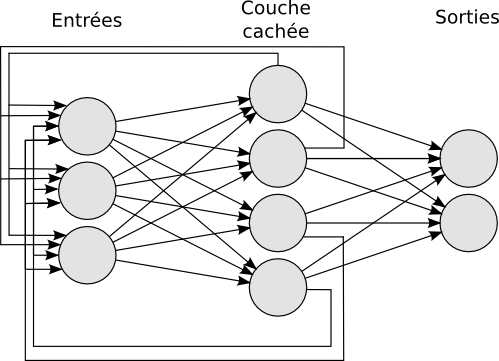
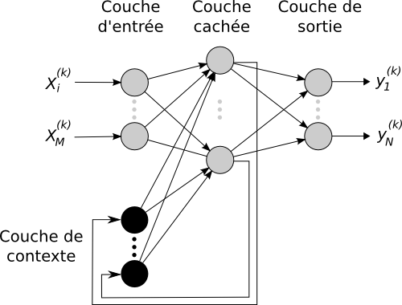

Le cerveau humain contient près de 86 milliards de neurones (Azevedo et al., 2009), et il existe environ 200 types de neurones. Dans un neurone nous pouvons distinguer trois régions principales (cf. figure 1) : le corps cellulaire qui contient le noyau du neurone ainsi que la machine biochimique nécessaire à la synthèse d'enzymes; les dendrites, qui se divisent comme les branches d'un arbre, recueillent l'information d'autres neurones et l'acheminent vers le corps de la cellule; l'axone, généralement très long et unique, il conduit l'information du corps cellulaire vers d'autres neurones avec qui il fait des connexions appelées synapses.
Au niveau des synapses, la transmission de l'information se fait par l'intermédiaire de molécules chimiques : les neuromédiateurs. Quand un signal électrique arrive au niveau de la synapse, il provoque l'émission de neuromédiateurs excitateurs ou inhibiteurs qui vont se fixer sur les récepteurs dendritiques de l'autre côté de l'espace inter-synaptique. Lorsque suffisamment de molécules excitatrices se sont fixées, un signal électrique est émis dans les dendrites. Le neurone compare alors la somme de tous ces signaux à un seuil. Si la somme excède ce seuil, le neurone émet un signal électrique (émission d'un potentiel d'action) le long de son axone. Sinon, il reste inactif et ne stimule pas les neurones auxquels il est connecté.
Un neurone artificiel modélise plus ou moins fidèlement le fonctionnement d'un neurone biologique. Il peut être défini comme une fonction algébrique non linéaire, paramétrée, à valeurs bornées, de variables réelles appelées entrée. On identifie trois éléments de bases : un ensemble de poids de connexions, un seuil, et une fonction d'activation (Haykin, 1998,Floreano and Mattiussi, 2008).
Voici une petite revue de quelques modèles de neurones du plus simplifié au plus biomimétique.
C'est la première modélisation hautement simplifiée d'un neurone décrit par (McCulloch and Pitts, 1943). Cette modélisation décrit une unité logique de seuil (Threshold Logic Unit (TLU)) qui applique une fonction de transfert ϕ aux entrées du neurone.
| y(i)=ϕ( |
| wj,i y(j)) (1) |
Avec y(i) la valeur de sortie du neurone, ϕ la fonction de transfert, y(1),y(n) les différentes entrées et wj,i les poids associés.
Dans la formulation originelle McCulloch et Pitts, les neurones avaient une sortie binaire (0 ou 1), mais deux des fonctions les plus utilisées sont la fonction seuil et la fonction sigmoïde :
| ϕ(x)= |
| (2) |
avec bias correspondant au biais et λ au coefficient de pente.
Les neurones à fonction radiale (Radial Basis Function ou RBF) (Buhmann, 2003) représentent une autre variété de neurones artificiels dont l'intensité de la réponse est inversement proportionnelle à la distance entre les entrées et un point précis dans l'espace de ces entrées. Les réseaux de fonctions à base radiale sont notamment utilisés dans la classification, l'approximation et la reconnaissance de parole. Leur but est d'approximer un comportement désiré par une collection de fonction, appelées noyaux. Un noyau est caractérisé par un centre Ci et des champs récepteurs r.
L'intégrateur à fuite (Leaky integrator, LI) possède une dynamique du premier ordre 1 avec une non-linéarité liée à la fonction de décision (souvent une sigmoïde) (Floreano and Mattiussi, 2008). Le terme intégrateur à fuite est une référence aux circuits électriques parce qu'un neurone polarisé se comporte électriquement comme un condensateur, avec un courant de fuite comme sur la figure 0.3. Les réseaux de neurones intégrateurs à fuite sont très utilisés pour modéliser le comportement d'une assemblée de neurones2 (Dayan and Abbott, 2005).
Variante du modèle LI dont les propriétés permettent de vérifier mathématiquement la stabilité des réseaux dans lesquels il est utilisé. Il a notamment été utilisé dans le cadre de modèles contractants des ganglions de la base (Girard et al., 2008). Dans le cas d'une simulation utilisant la méthode d'Euler pour ses intégrations, son comportement est calculé de la manière suivante:
|
yt+dt(i) étant la variable de sortie du neurone i, Ti et τ(i) des constantes propres du neurone et τ des constantes et pt(i) la somme des entrées à l'instant t. La principale différence entre ce modèle et un LI vient des opérateurs min et max qui limitent les valeurs possibles pour la variable d'état interne du neurone. L'intérêt est de fortement réduire le temps maximum de retour à l'état de stabilité dans le cas où le neurone est soumis à des entrées ayant une forte intensité (dans le cadre d'une entrée inhibitrice très forte, un neurone LI peut voir sa variable d'état atteindre des valeurs très fortement négatives. Après l'arrêt de cette entrée, la variable interne mettra un temps important avant de revenir à l'état d'équilibre, même avec une entrée excitatrice).
Modèles dont le but est de décrire la série d'impulsions générée par un neurone. La "sortie" du modèle est une suite d'instants, le temps des potentiels d'action. L'intérêt de ces modèles est de pouvoir illustrer une capacité de synchronisation contrairement aux modèles précédents. Or il a été montré que la synchronisation neuronale existe dans le système nerveux et a un rôle fonctionnel (Brette, 2003). Selon (Maass, 1997), ils sont computationnellement plus efficaces que les autres réseaux de neurones.
Il existe différents types de modèles impulsionnels :
Le choix de la topologie d'un réseau dépend de la tâche que l'on souhaite résoudre
Ce sont des réseaux dont la structure suit une logique de traitement de l'information au travers de couches de neurones successives, de l'entrée vers la sortie, sans retour de l'information en amont (voir figure 0.4). C'est par exemple le cas des perceptrons et perceptrons multi-couches (Rosenblatt, 1958,Rumelhart et al., 1986). Dans ces réseaux la dynamique est dirigée par la présentation des exemples d'entrée. Les activations se propagent en sens unique, de la couche d'entrée à la couche de sortie. Ils sont utilisés pour de la classification, reconnaissance des formes (caractères, parole, ...) (LeCun et al., 1989) ou pour de la prédiction.
Ces cartes (Fukushima, 1975,Kohonen, 1982,Rumelhart and Zipser, 1985) sont inspirées de la structure du cortex, notamment visuel, dans lequel on peut observer une connectivité locale . En d'autres termes, chaque neurone est connecté aux entrées et à ses voisins. Parmi les différentes applications réalisées à l'aide des cartes auto-organisatrices, un assez grand nombre sont des tâches de classification non supervisées : comme une aide dans l'analyse d'observations satellitaire (Yacoub et al., 2001) ou la recherche documentaire (Kaski et al., 1998). Pour une liste d'applications se référer à (Kohonen, 2001).
il s'agit de réseaux dont la structure, peut comporter des récurrences (voir figure 0.5). Ces récurrences peuvent changer radicalement la dynamique qui pourra s'instaurer dans un réseau de neurones et l'amener à s'auto-entretenir. La notion de réseau récurrent est étudiée et mise en application dans une mémoire auto-associative (Hopfield, 1982). L'utilisation de récurrence sera reprise dans le contexte des perceptrons multicouches, avec le réseau de Jordan (Jordan, 1986) et le réseau de Elman (Elman, 1990). Dans ces deux modèles, l'activation de la couche de sortie (dans le cas Jordan) ou de la couche cachée (dans le cas de Elman) est dupliquée en retour dans la couche d'entrée. Les réseaux récurrents utilisant des intégrateurs à fuite peuvent être désignés sous le nom de réseaux de neurones récurrents à temps continus (continuous time recurrent neural network, CTRNN) (Beer, 1995,Yamauchi and Beer, 1996). Ils sont connus pour être théoriquement capables de répliquer n'importe quels systèmes dynamiques et il a été montré que des petits CTRNN sont capables de dynamiques complexes (Beer, 1995,Beer, 2006,Bongard, 2011).
 Figure 0.5: Architectures de réseaux récurrents. (a) Réseau récurrent simple. (b) Réseau de type Elman.
Les réseaux echo state (Jaeger, 2002) sont composés d'une couche cachée faiblement et aléatoirement connectée (autour de 1% de connectivité). Les taux de connectivité et les poids de connexion de la couche cachée sont fixés au préalable et doivent respecter la propriété d'echo state (cette propriété est décrite à la section ??).
Ce type de réseau a été testé sur différentes applications robotiques telles que la détection d'évènements complexes dans la navigation d'un robot autonome (Antonelo et al., 2007) ou des tâches impliquant une forme de mémoire (Hartland et al., 2009).